홈 · 가이드
업무포털 사용 가이드
페이지별로 어떤 기능이 있는지, 어떻게 쓰는지 정리했어요. 제목을 눌러 자세한 사용법을 펼쳐볼 수 있습니다.
로그인하면 가장 먼저 보이는 첫 화면이에요. 위에서부터 과제 현황 → 성과 현황/위탁과제 현황 → 캘린더 순서로 배치돼 있습니다.
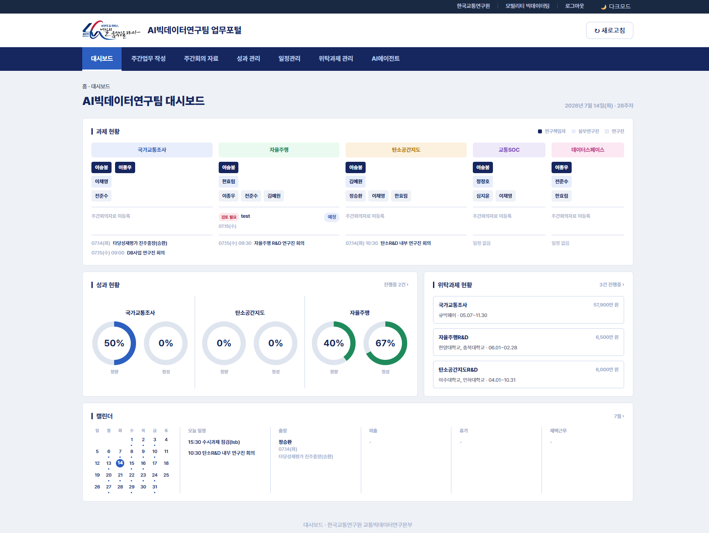
- 과제 현황 (연구진 구성 · 주간회의 · 일정)
- 성과 현황 · 위탁과제 현황 (나란히)
- 캘린더
- 1분마다 자동 새로고침
자세히 보기
- 맨 위 과제 현황에서는 과제별로 연구책임자·실무연구진·연구진 구성을 한눈에 볼 수 있고, 그 아래 각 과제의 주간회의 자료와 일정이 같이 표시됩니다.
- 과제 현황에 나오는 회의 항목을 클릭하면 요약 · 회의내용 · 코멘트를 보여주는 팝업이 뜹니다. 팝업 안에서 코멘트를 바로 작성하거나 삭제할 수 있고, "검토 필요" 배지가 붙은 회의는 아직 확인이 필요하다는 뜻이에요.
팝업 하단의 "주간회의 페이지로 이동" 버튼을 누르면 원본 회의자료 페이지로 넘어갑니다.
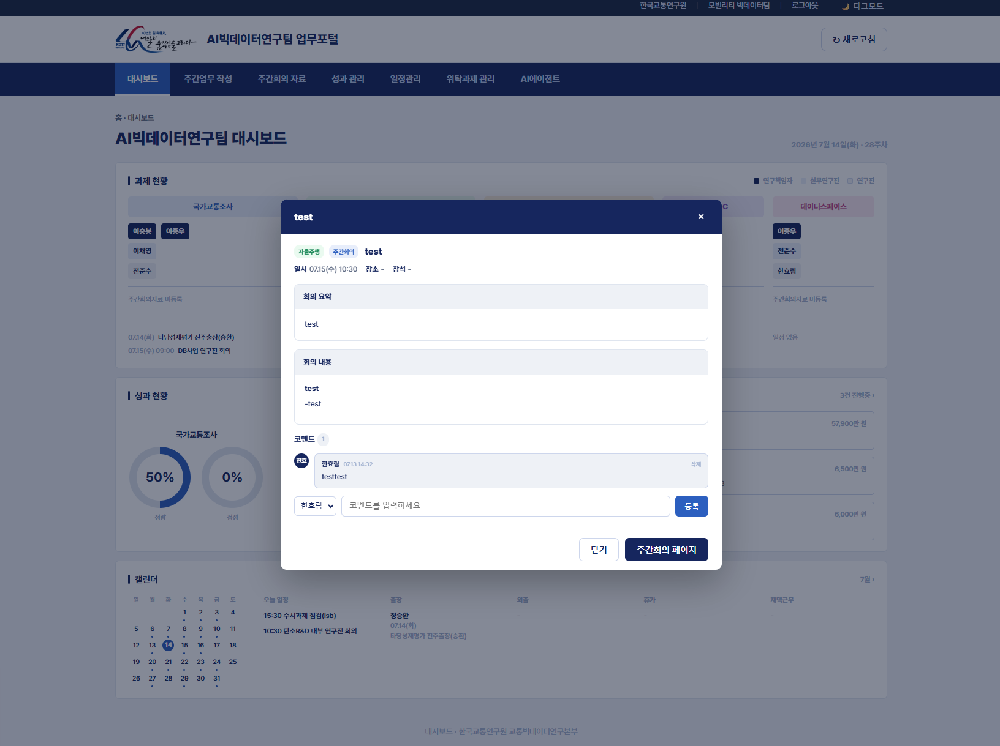
- 그 아래 성과 현황 카드에서는 과제별 정량 · 정성 성과 진행률을 도넛 차트로 보여줘요. 카드를 클릭하면 성과관리 페이지로 이동합니다.
- 바로 옆 위탁과제 현황 카드에서는 진행 중인 위탁과제 목록(기관·기간·예산)을 볼 수 있어요. 클릭하면 위탁과제 관리 페이지로 이동합니다.
- 맨 아래 캘린더는 이번 달 미니 달력과, 선택한 날짜의 일정, 그리고 출장·외출·휴가·재택근무 인원을 4칸으로 따로 보여줍니다. 날짜를 클릭하면 그날 일정으로 바뀌고, "N월 ›"을 누르면 일정관리 페이지로 이동해요.
- 화면은 1분마다 자동으로 새로고침되고, 우측 상단 ↻ 새로고침 버튼으로 즉시 갱신할 수도 있습니다. (입력 중인 필드나 열려있는 모달이 있으면 자동 새로고침은 건너뜁니다.)
- 우측 상단 🌙 다크모드 버튼으로 화면 테마를 바꿀 수 있고, 로그아웃 링크로 로그인 화면으로 돌아갑니다.
그 주의 주무가 주간업무 PDF를 올리면 업무실적·업무계획이 자동으로 채워지고, 팀원들이 각자 확인·수정하는 페이지예요.
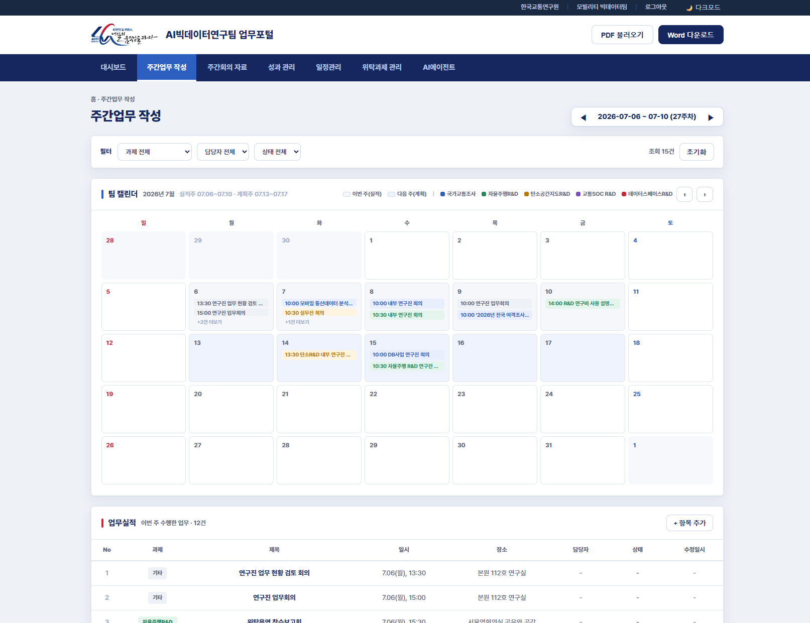
- PDF 업로드 → 업무실적(PDF 기반) · 업무계획(두레이 캘린더 기반) 자동 채움
- 팀원별 확인·수정·삭제
- 캘린더 동기화로 두레이 신규 일정 실시간 반영
- Word 다운로드 → 한글(HWP) 파일에 붙여넣어 제출
자세히 보기
- 그 주의 주무가 상단 PDF 불러오기 버튼으로 주간업무 PDF를 올립니다. 그러면 업무실적은 PDF 내용을 바탕으로, 업무계획은 두레이 팀 캘린더를 바탕으로 자동으로 채워져요.
- 팀원들은 각자 자기 항목을 확인해서, 업무실적은 고칠 내용이 있으면 수정하고, 업무계획은 채울 내용이 있으면 채웁니다. 항목을 클릭하면 수정 팝업이 열려요.
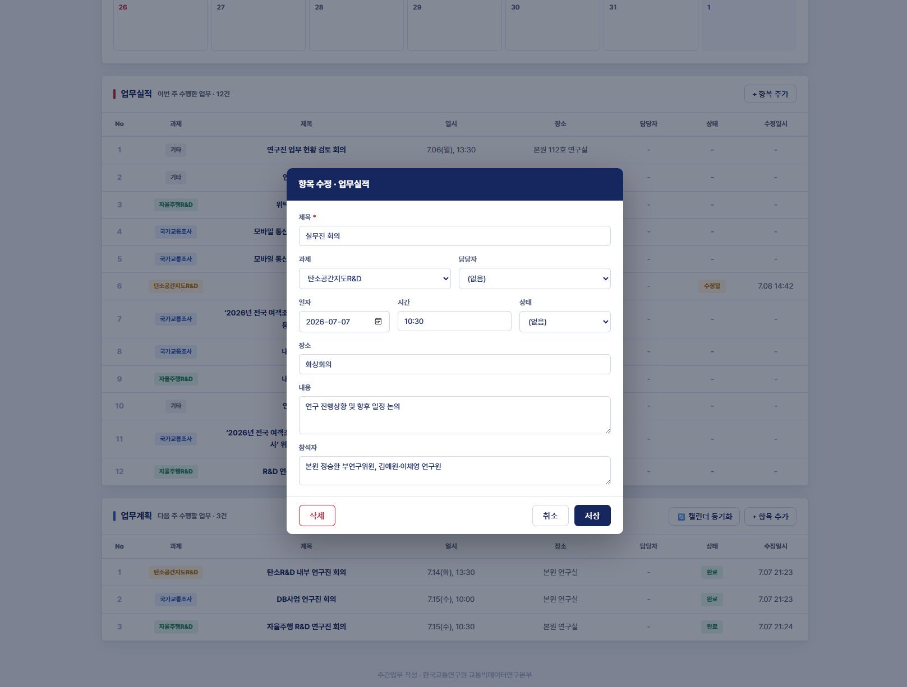
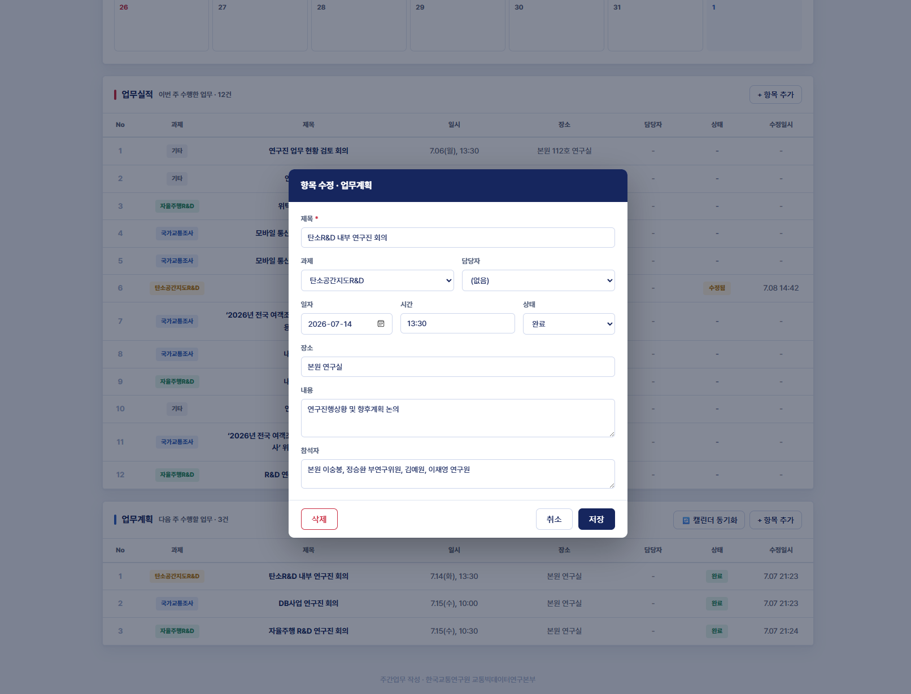
- 작성이 필요 없는 항목은 팝업 하단의 삭제 버튼을 눌러 지우면 됩니다.
- 업무계획 쪽 팝업에는 캘린더 등기화 버튼도 있어요. 두레이 캘린더에 새로 추가된 일정이 있으면, 이 버튼(또는 화면 상단 팀 캘린더의 🔄 캘린더 동기화 버튼)을 눌러서 실시간으로 반영할 수 있습니다.
- 팀원들이 다 작성했으면, 주무가 상단의 Word 다운로드 버튼을 눌러 수정된 내용을 문서로 받습니다.
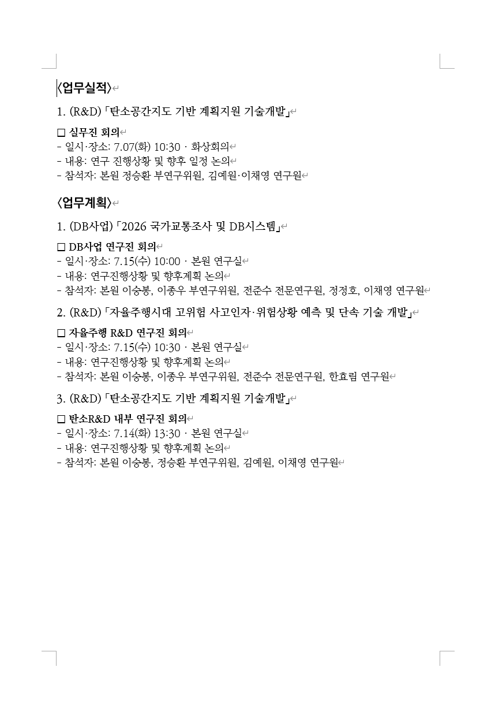
다운로드한 내용을 제출용 한글(HWP) 파일에 붙여넣으면 끝!
- 화면 상단 좌우 화살표(◀ ▶)로 다른 주(week)로 이동할 수 있고, + 항목 추가로 항목을 직접 추가할 수도 있습니다.
매주 과제별로 진행한 주간회의 내용을 한곳에 모아보기 위한 페이지예요.
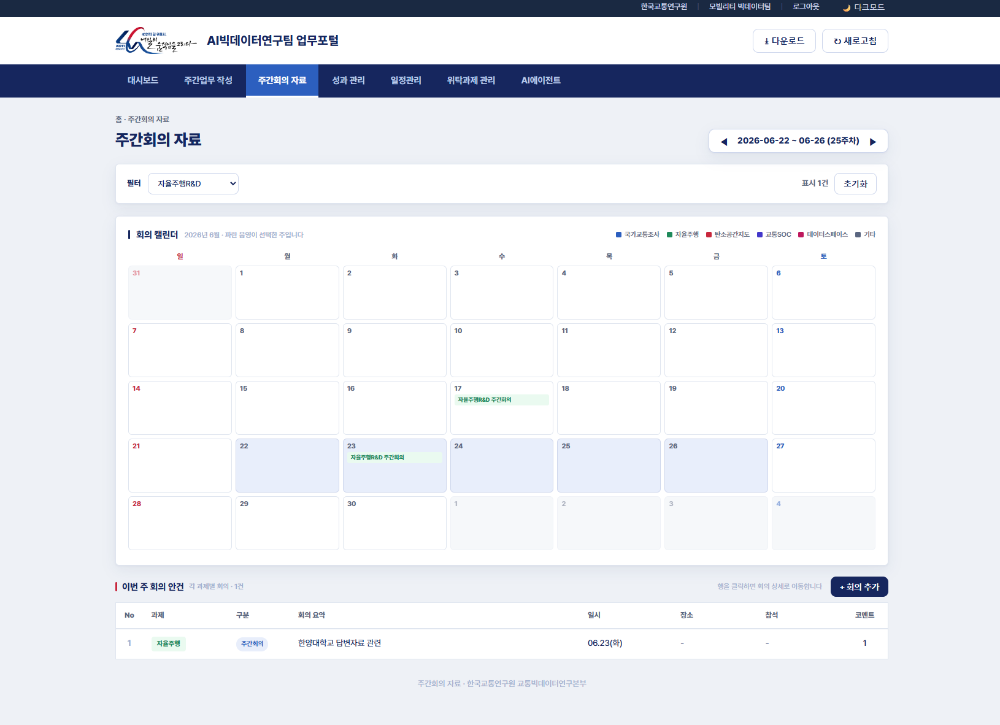
- 이번 주 회의 안건(과제별 개요) 보기
- 회의 추가
- 회의 상세보기 · 수정 · 코멘트
- 회의 캘린더
- 과제별 필터링해서 다운로드
자세히 보기
- 맨 처음 보이는 이번 주 회의 안건에서는 과제별로 이번 주에 어떤 회의를 했는지, 누가 참석했는지를 개요식으로 간단하게 볼 수 있어요. (자세한 내용까지는 안 나오고, 요약만 보여요.)
- 같은 화면에서 + 회의 추가 버튼으로 새 회의 항목을 만들 수 있습니다.
- 목록에서 회의를 클릭하면 자세한 회의 내용(요약·회의내용)이 나오는 상세 화면으로 들어가요. 정보 수정 · 요약 수정 · 내용 수정 버튼으로 각 부분을 그 자리에서 고칠 수 있습니다.
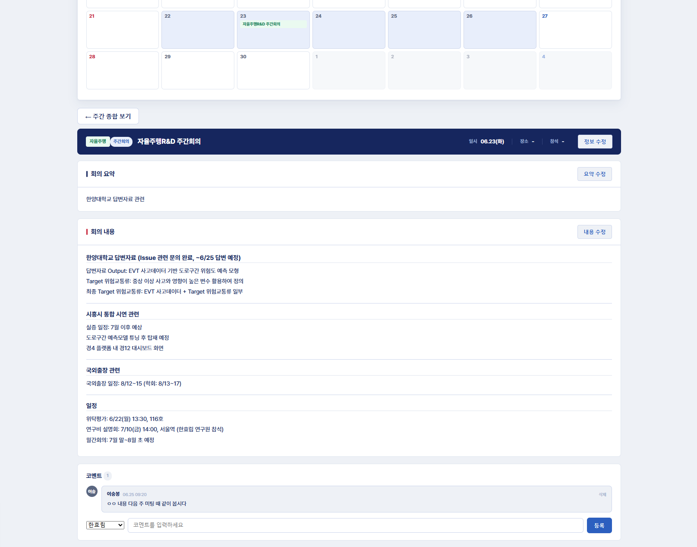
- 상세 화면 하단에는 코멘트도 달 수 있어요. 이름을 고르고 의견을 입력한 뒤 등록 버튼을 누르면 됩니다.
← 주간 종합 보기를 누르면 다시 목록으로 돌아갑니다.
- 화면 위쪽에는 회의 캘린더도 있어요. 달력에 표시된 회의를 클릭해도 똑같이 그 회의의 상세 내용으로 들어갈 수 있습니다.
- 상단 ⭳ 다운로드 버튼으로 회의 내용을 문서로 받을 수 있는데, 이때 과제 필터를 걸어두면 그 과제 회의만 골라서 다운로드돼요. 예를 들어 "자율주행R&D"만 선택해두고 다운로드하면 그 과제 회의 내용만 담깁니다.
- 정보 수정에서는 과제·구분·일시·장소·참석자를 고칠 수 있어요.
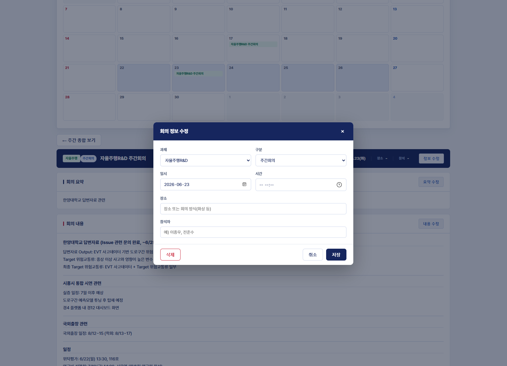
- 내용 수정(회의 내용)을 쓸 때는 줄바꿈과 빈 줄로 아젠다를 구분해요.
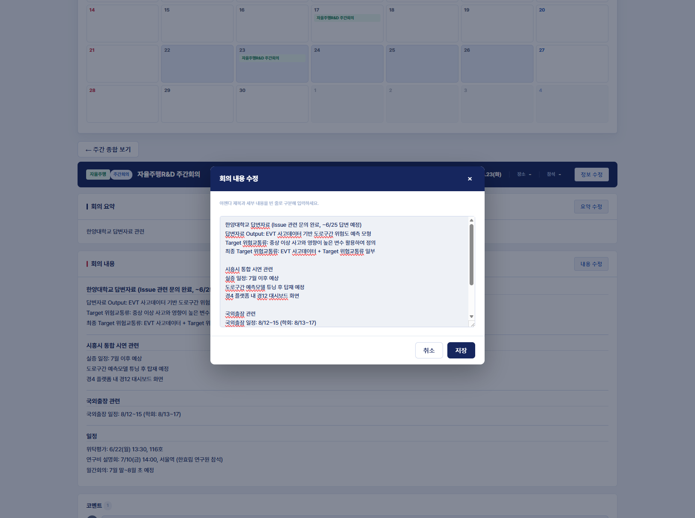
📝
회의 내용(아젠다) 작성 방법
· 한 아젠다 블록의
첫 줄 = 굵게(볼드) 표시되는
아젠다 제목
· 그 아래 줄들 = 그대로
본문 내용으로 표시 (줄바꿈 그대로 유지됨)
· 아젠다를
새로 구분하고 싶으면 사이에
빈 줄(엔터 두 번)을 넣으면 돼요
예시:
한양대학교 답변자료 (Issue 관련 문의 완료)
답변자료 Output: EVT 사고데이터 기반 위험도 예측 모형
Target 위험교통류: 중상 이상 사고 활용
시흥시 통합 시연 관련
실증 일정: 7월 이후 예상
→ "한양대학교 답변자료…"와 "시흥시 통합 시연 관련"이 각각 굵은 제목이 되고, 그 아래 줄들이 본문으로 붙어요.
팀 캘린더(두레이) 일정을 달력 형태로 보고, 직접 추가·수정·삭제할 수 있는 페이지예요.
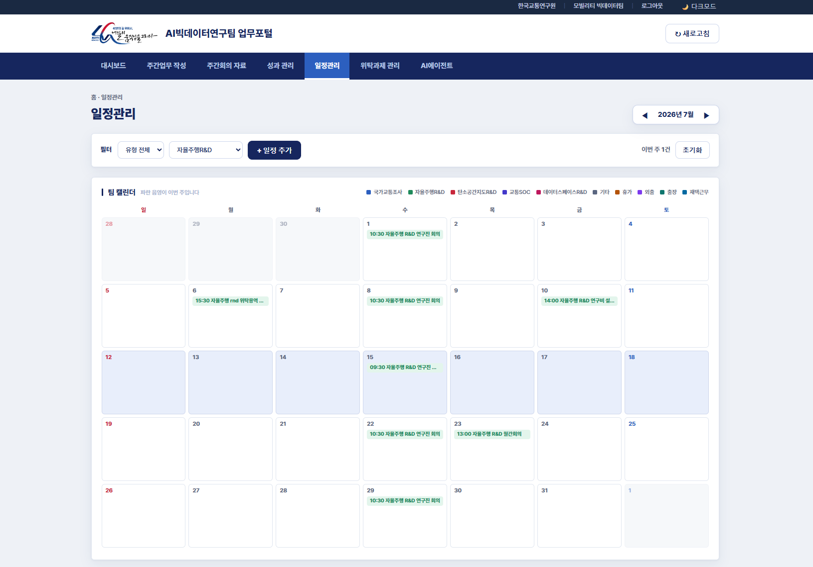
- 월별 달력 보기 + 유형·과제 필터
- 이번 주 근태 현황(출장·외출·휴가·재택근무)
- 이번 주 전체 일정 목록
- 일정 추가/수정/삭제 (두레이와 실시간 연동)
- 지난 날짜 일정은 자동 보관(읽기 전용)
자세히 보기
- 맨 위 팀 캘린더에서 필터(유형/과제)로 원하는 일정만 골라볼 수 있어요.
- 달력 아래 이번 주 근태 현황에서는 이번 주에 출장 · 외출 · 휴가 · 재택근무인 사람을 유형별로 한눈에 볼 수 있어요.
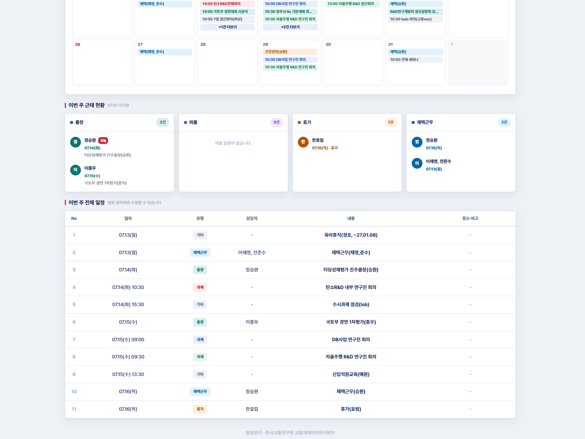
- 그 아래 이번 주 전체 일정 표에서는 근태뿐 아니라 회의 등 이번 주의 모든 일정을 목록으로 볼 수 있어요. 행을 클릭하면 바로 수정할 수 있습니다.
- 달력에서 날짜를 클릭하거나 상단 + 일정 추가 버튼을 눌러 새 일정을 등록합니다.
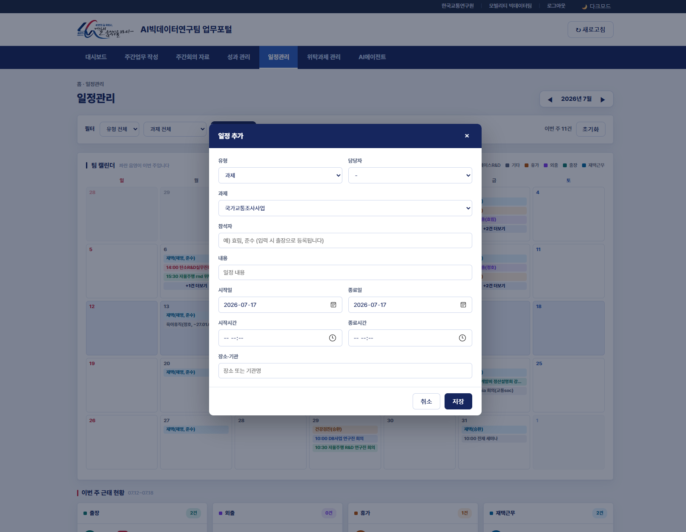
- 유형을 고르면 그에 맞는 입력창이 나와요.
휴가/외출/재택근무는 담당자(또는 여러 명이면 참석자란에 콤마로)를 반드시 입력해야 합니다. 과제/출장은 담당자·참석자·과제(프로젝트)를 선택할 수 있어요. 참석자란에 이름을 입력하면 자동으로 "출장"으로 등록되니 참고하세요.
- 이미 있는 일정을 클릭하면 같은 창이 수정 모드로 열립니다. 하단의 삭제 버튼으로 지울 수도 있어요.
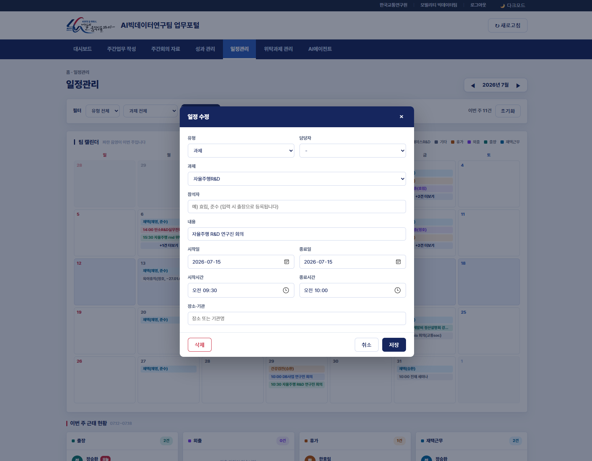
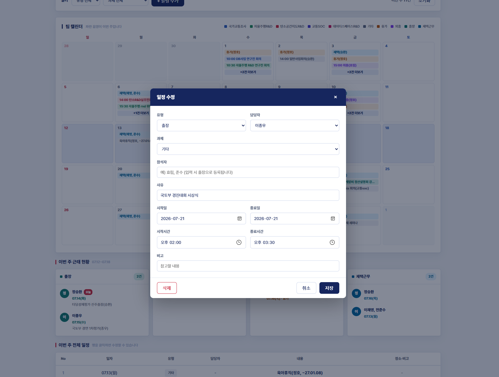
- 저장하면 즉시 팀 캘린더(두레이)에 반영되고, 대시보드·주간업무 등 다른 페이지에도 같이 표시됩니다.
- 초기화 버튼으로 필터·선택 상태를 처음으로 되돌릴 수 있어요.
⚠ 오늘 이전(지난) 일정은 매일 자동으로 별도 보관되는 기록이라, 이 화면에서 수정·삭제가 안 돼요. 지난 일정을 고치고 싶으면 담당자에게 문의해 주세요.
위탁업체와 진행한 회의록과, 주고받은 요청자료를 연도·과제별로 정리하는 페이지예요.
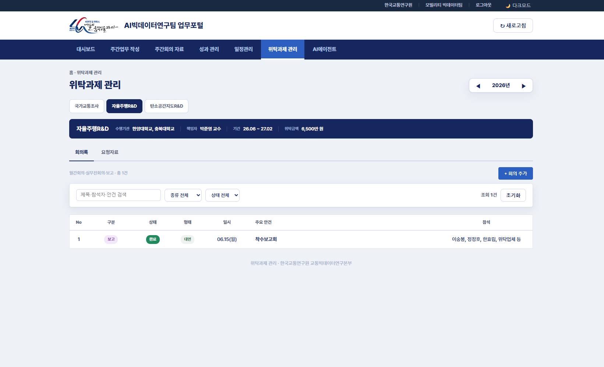
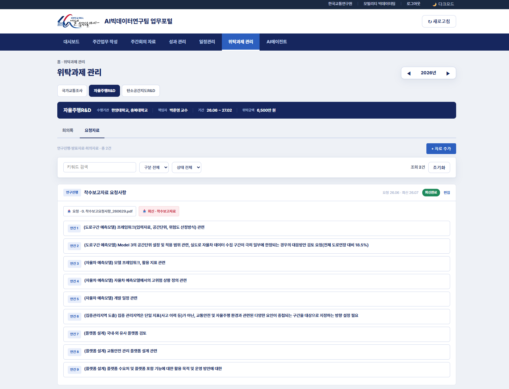
- 연도(◀ ▶)와 과제 선택
- 회의록: 월간회의 · 실무진회의 · 보고로 구분해서 기록
- 요청자료: 요청·회신 내용을 안건별로 정리
- 둘 다 키워드 검색 가능
자세히 보기
- 상단의 ◀ 연도 ▶ 화살표로 연도를 바꾸고, 드롭다운에서 과제를 선택합니다. 회의록 / 요청자료 탭으로 전환할 수 있어요.
- 회의록은 월간회의 · 실무진회의 · 보고로 구분해서 등록해요. "보고"는 착수보고·중간보고·최종보고처럼 제목에 직접 적어서 구분하면 됩니다. 항목을 클릭하면 상세 팝업이 열리고, 수정 버튼으로 구분·일시·상태·형태·안건·참석·회의 내용을 고칠 수 있어요.
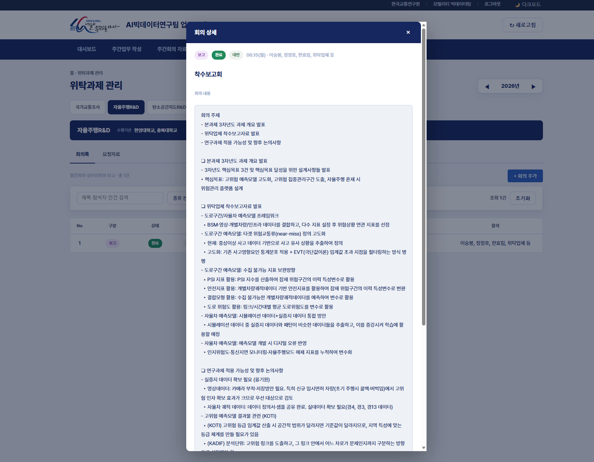
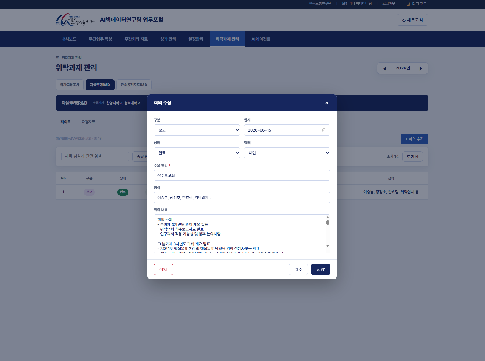
+ 회의 추가로 새 회의를 등록할 때도 같은 형태의 입력창이 열려요.
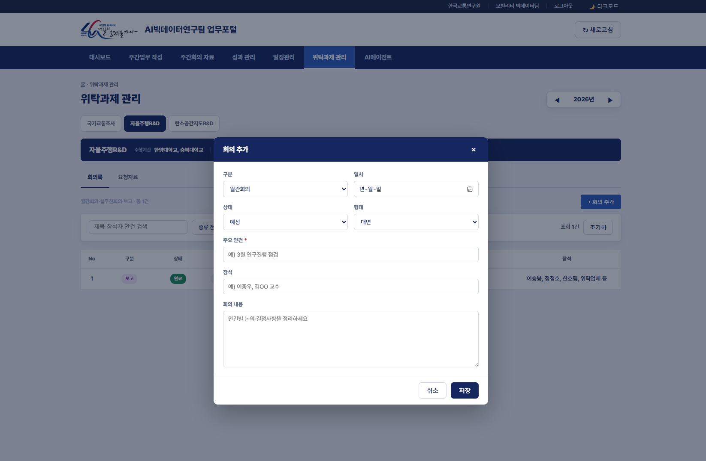
- 요청자료는 위탁업체와 주고받은 자료를 한 번에 파악하기 위한 곳이에요. + 자료 추가 버튼을 눌러 등록합니다.
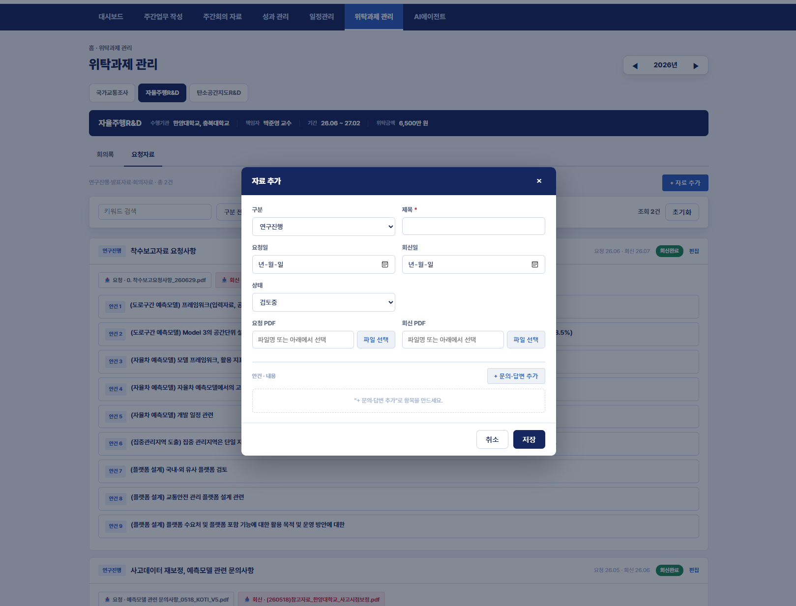
- 자료 추가 화면에서는 구분·제목·요청일·회신일·상태와 함께, 요청 PDF / 회신 PDF 파일을 첨부할 수 있어요. 그 아래 안건별로 문의사항과 답변을 정리하는데, + 문의·답변 추가 버튼으로 안건을 여러 개 만들 수 있습니다.
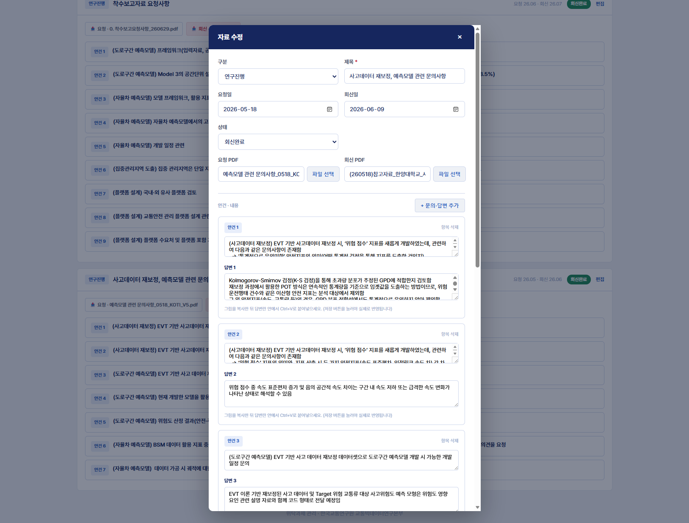
- 그림(이미지)을 넣으려면, 이미지를 복사해둔 상태에서 해당 안건의 답변란 안을 클릭하고 Ctrl+V로 붙여넣기만 하면 돼요. 붙여넣은 그림은 그 안건 밑에 미리보기로 나타나고, 저장 버튼을 눌러야 실제로 반영됩니다.
- 등록된 요청자료는 상세보기에서 안건별 문의·답변과 첨부된 그림(FIGURES)을 한 화면에서 볼 수 있어요.
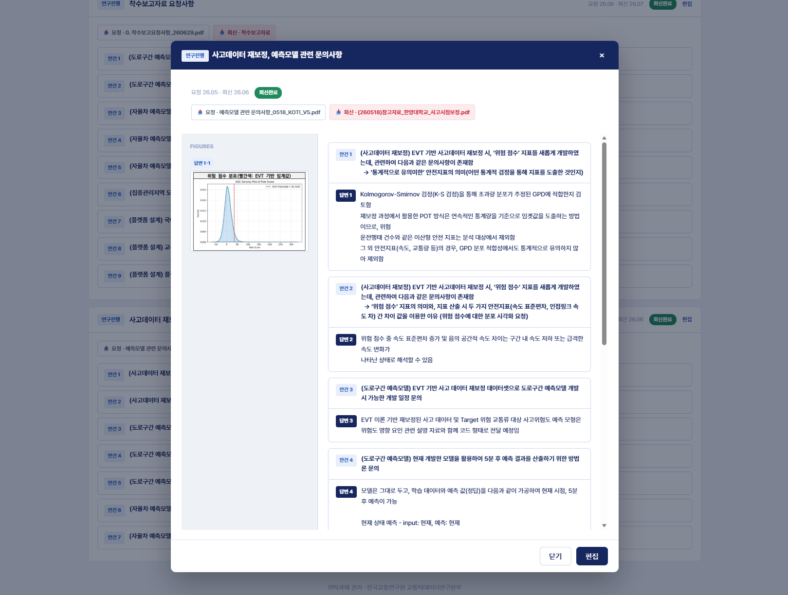
- 회의록/요청자료 둘 다 검색창(제목·참석자·안건 검색 / 키워드 검색)으로 원하는 내용을 바로 찾을 수 있습니다.
등록된 위탁과제가 안 보이면, 노션의 "위탁과제 정보" DB에 과제가 먼저 등록되어 있어야 해요.